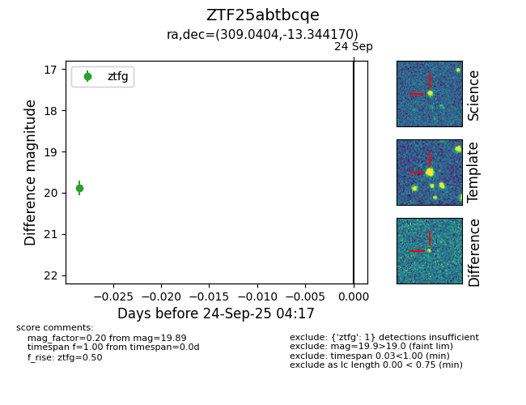

FINK: ZTF25abtbcqe
Lasair: ZTF25abtbcqe
ALeRCE: ZTF25abtbcqe
ZTF25abtbcqe (ztf,fink)
equatorial (ra, dec) = (309.0404,-13.34417)
galactic (l, b) = (32.2982,-29.16383)

last ztfg=19.89
1 ztfg detections